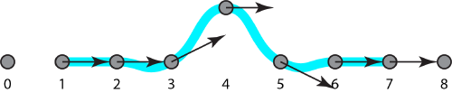

Page 13: Approximating curves.
Interpolating curves have some problems.
While it is convenient to specify a curve by the points it goes through, it has drawbacks. However, such interpolation presents a problem: to go through a point smoothly, we often need to overshoot it.
Here is a simple example with a Cardinal Spline:

{kind=link}
In general, interpolation is good for specifying what happens at the specified points, but provides less control over what happens in between.
A different strategy is approximation. In an approximation strategy, the points are used to influence the shape, not necessarily to provide a specific target.
We saw an example of approximation with the corner cutting subdivision method at the beginning of the workbook. If you remember the corner cutting demonstration from the first page, notice how the resulting curve is controlled by the initial points but doesn’t touch them. Here it is again (after 5 rounds of subdivision):
The two most common types of approximating curves in computer graphics are Bezier Splines and B-Splines.
We’ll discuss Bezier Splines over the next few pages, but only touch on B-Splines briefly - they probably deserve an entire workbook!
The introduction of Approximating Curves in the 2023 lecture sets up Bezier curves nicely.
Part of 2023 Lecture 10 | Slides
Part of 2023 Lecture 10 | Slides